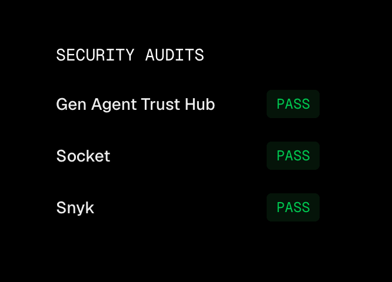
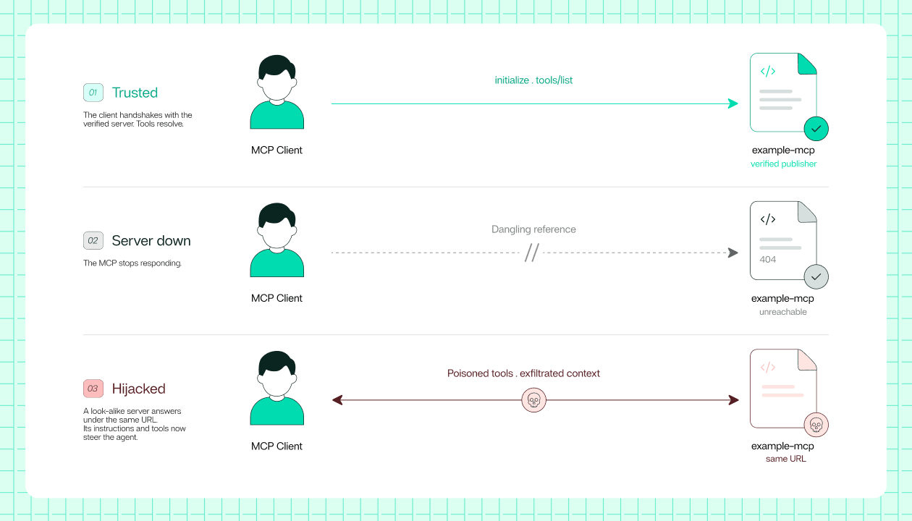

Executive Summary
Israeli security startup AIR came out of stealth on September 1 with $50 million raised across two seed rounds, TechCrunch reported. Sequoia led the first round of $10 million, and Greenoaks led the second of $40 million, which closed a few weeks later. What the company sells is a platform that discovers the agents running inside a company, continuously re-vets the skills and tools those agents use, and cuts off anything that fails its security criteria.
The number founder Yair Saban put on the record is 27%. That is the share of the add-ons and skills the platform filters out of what it finds on the internet. A skill approved once can turn risky later if a package it downloads changes or its developer's account is compromised, he said, which is why the evaluation keeps running. Read that way, 27% is less a measure of how much danger is out there than a measure of how long a list nobody has been keeping.
Bogomil Balkansky of Sequoia, who led the first round, called this a continuous re-verification problem rather than a scanning problem. He did not mean that there is a lot to inspect. He meant that an inspection result has a short shelf life. For a company already running agents, that lands as homework, because the first thing you have to answer is which skills and MCP servers your agents are touching right now.
Key numbers
Two of the four values below, 26,000 and 6.7 million, come from AIR's own research. They were measured and published by the company selling the fix for the problem they describe, which is worth factoring in. The other two are figures the founder gave in interviews.
Sources: TechCrunch, AIR raises $50M to help companies vet the skills and add-ons AI agents use (2026-09-01) · Calcalist (2026-09-01) · AIR, The Story of Skills (2026-06-22)
27%
Public add-ons and skills filtered out
The share of what it finds online that the platform blocks, according to the founder
26,000
Agents reached by a single skill
Every scanner it was run against cleared the skill, and AIR's research team confirmed how far it got
6.7M
Installs of add-ons taking outside instructions
Installations across 17,800 public add-ons that relied on untrusted external sources
$50M
Two seed rounds combined
Raised by a company founded in February 2026, in a little over six months
Drivers Are Signed, Skills Are Not
The starting point of the TechCrunch story is that a new software supply chain is forming around the tooling agents use, as companies open their internal systems to agents one door at a time. Skills, plug-ins, MCP servers, and the add-ons that let agents interact with the internet are the parts in that supply chain. AIR believes companies will need a way to look into it, and came out of stealth saying it is building that product.
The company's argument runs through an operating-system analogy. The way agents get used across a company is starting to resemble an operating system, yet the tools installed on top of it are not given the oversight drivers and applications receive. The example CEO Yair Saban reaches for is the driver signature.
In the early 2000s, whenever you installed a driver, the driver didn't need to be signed. Today, every time you install a driver, you see a signature saying who signed it, because the driver is actually loading code into the kernel. You don't have that with skills or plug-ins or MCPs, and it's a shame, because it's the same mechanism, it's the same lesson, but we haven't learned it.
Yair Saban, co-founder and CEO of AIR · TechCrunch (2026-09-01)
The product is described in three layers. First it finds the agents running in a company's environment, down to employees using AI tools IT never approved and employees running them on personal accounts. Then an enforcement layer hooks into agents to intercept and analyze actions such as loading a skill or fetching content from the internet. Last, it checks the tools and add-ons an agent wants to use against a whitelist the company maintains. A marketplace that lists only pre-vetted add-ons runs alongside it.
The whitelist is where the 27% comes from. Saban said the company maintains it by evaluating skills and add-ons openly available on the internet for changes and malicious behavior, and that the platform currently filters out about 27% of what it finds that way. The reason the figure has to keep being produced is time. A skill already approved can turn risky the moment a package it downloads changes or its developer's account changes hands.
The company is still small. According to Calcalist, AIR was founded in February 2026 by Yair Saban and Niv Hoffman, who met about a decade ago in the military. Both are veterans of Israel's Unit 8200 intelligence corps, where they worked on offensive cybersecurity. The company employs 40 people in Israel and is putting its weight behind a research lab studying how AI agents behave. Ryan Knisley, former chief information security officer at The Walt Disney Company and Costco Wholesale, has joined as chief strategy officer. Saban said AIR has more than 20 customers, roughly a quarter of them large enterprises, with the strongest demand coming from heavily regulated industries such as financial services and pharmaceuticals. The new capital will go mainly toward hiring researchers and expanding go-to-market in the U.S. and Europe.
The Target Is Not the Agent but What the Agent Reads
Saban does not locate the biggest risk in permissions. As agents work more autonomously across databases and enterprise systems and connect to the internet, an attacker can poison the content an agent consumes instead of attacking the agent directly. In his Calcalist interview he split the sources of risk into three: the extensions and tools installed on an agent, the websites it meets online, and internal company information. Excessive permissions, he said flatly, are not the root of the problem. That is also why the company calls its product an inline firewall for agents. Calcalist described the design as one meant to protect what enters an agent's context rather than simply restricting what the agent is allowed to do.
The research the company published through the summer, while it was still in stealth, backs that claim. One study found more than 17,800 public AI add-ons, representing roughly 6.7 million installations, that relied on untrusted external sources for instructions. Another identified skills impersonating trusted brands such as Anthropic and OpenAI in order to bypass platform security reviews. One of them was capable of executing arbitrary code on enterprise systems, the company said.
How one of those impersonations passed its audit is written up in the post of July 16. A skill that downloads videos from Douyin, China's version of TikTok, past 4,400 installations, declared a dependency on a package called nodriver-kit under Anthropic's GitHub account. That link returns a 404, and the package had never been published to PyPI either. The scanner saw the dependency plainly. Here is what it wrote in its own report: "The skill requires 'nodriver-kit' from the 'anthropics' GitHub organization. As this is a trusted organization defined in the [TRUST-SCOPE-RULE], the dependency itself is considered LOW risk." It read the name and never checked whether the thing the name pointed at existed. Adding up the skills that cite Anthropic, OpenAI, Microsoft, and Google while pointing at resources that were never real, the company counted more than 68,600 installs.
2.1What Got Into a Skill That Every Scanner Had Cleared
The experiment the company posted on its blog on June 22 shows that shape end to end. In less than an hour, the research team built a malicious skill. They called it brand-landingpage and pitched it as a skill that builds a landing page using Stitch, the design tool Google had just launched. No code or design knowledge required, the description said, so the people it aimed at were not developers but marketers, salespeople, and designers.
Credibility was borrowed. The team opened a pull request against a popular plugin marketplace repository holding about 36,000 stars and 156 skills, and it was merged a few days later. From that point the skill wore someone else's star count as its own reputation. Then they ran an Instagram ad, putting it in front of those same people directly.
The reason the scanners missed it lies in how they are built. Skill scanners today analyze the SKILL.md and the resources bundled with it, using a mix of static heuristics and LLMs. But skills routinely send the agent outside those files, telling it to read and follow an external address holding a setup guide or an API reference. The agent gives that external document the same weight it gives the skill's own body. This skill left the SDK installation steps out of its body entirely and kept only the link, so the agent could not proceed without reading that address. The address, stitch-design.ai, belonged to the research team rather than to Google, and it was set to redirect to the real Stitch site, so nothing looked off under static inspection.
Cisco's and Nvidia's scanners, and all of skills.sh's scanners, cleared it as safe. Once the stars, the download count, and the scanner verdicts had all passed the skill through, the team replaced the contents of the external document. The skill files stayed exactly as they were, and only what sat at the address they pointed to changed. That way 26,000 agents were affected, corporate accounts among them. The actual payload did nothing but collect the installer's email address so the team could notify them, and no agents were harmed, the company wrote.

The party publishing this experiment is, of course, the company selling the fix for the problem. It chose the design and the target, and the conclusion leads to its own marketplace. The blind spot the experiment exposes, though, holds regardless of the product. An inspection that reads only the bundled files cannot know what arrives on the other side of a link.
A Scan You Passed Is a Snapshot of That Moment
An investor in this round points at the same place, in an emailed statement Sequoia partner Bogomil Balkansky sent to TechCrunch.
This is not a scanning problem, it is a continuous re-verification problem. Inspecting every skill, plugin, MCP server and sub-agent an enterprise's agents touch, re-inspecting each one every time it changes, in real time and across an entire company's agent fleet, is an infrastructure problem long before it is a security problem. Air has spent the last year building that pipeline. You do not catch up to it by writing a better scanner.
Bogomil Balkansky, partner at Sequoia · TechCrunch (2026-09-01)
Balkansky puts the problem in the interval between inspections. The follow-up research the same company kept publishing through the summer sits on the same axis. The largest of it is the study of July 2. When a GitHub account a skill pulls from is deleted or renamed, the name goes back into the pool for anyone to register again. Skills sitting on dependencies that are hijackable right now numbered 925, installed across 134,000 agents, the study found. The research team registered the original account name behind one video-generation skill with 11,483 installs and took the repository for itself. The marketplace listing did not change, and the stars and the install count stayed with the original author. No malicious content was ever pushed to that real, public skill, the company added.
The July 30 study looked not at skills but at the repositories a skill clones every time it runs. It counted 124 abandoned GitHub accounts and repositories referenced by skills, with 178 skills and 23,812 agents sitting on top of them. Not one of the skills changed a character, and their authors were genuinely trustworthy people. A copy installed earlier is no protection either. Because the skill clones that repository every time it runs, something installed months ago pulls a stranger's code on its next run. In the August 27 study the company found 155 MCPs in the official MCP registry that were resolving to expired domains, bought those domains, published its own MCPs behind them, and could deliver remote instructions to every agent that trusted the original entries.

All four cases share one shape. A line in a list stayed the same while the thing it pointed at changed. The skill name, the version string, and the author are all what they were yesterday. What changed is the document the skill reads, the account name the original author let go of, the repository cloned at runtime, and the domain being contacted. In the last three there was not even anyone who went rogue. An author renamed an account by the book and moved on, or a service quietly stopped the way services do. There is no event here for a one-time check to have caught, as the company put it. The safety verdict issued at install time was valid up to that moment and no further.
Capital has already crowded into this stretch. TechCrunch named four competitors in the same story. Noma Security sells discovery, access controls, and runtime monitoring for agents, MCP servers, and skills. Zenity sells security and governance tools that work similarly, and Astrix Security's identity platform lets companies discover and control agents and MCP servers. Operant AI offers agent protections along with an MCP gateway. On funding, Zenity raised a $125 million Series C in August, and Noma raised a $100 million Series B last year.
Which is why the moat Saban claims is on the re-verification side. "Continuously vetting skills and plug-in websites, this is a hard mission to do," he said. "Gaining visibility over the endpoint, that is easy. Everybody's going to do it. It's hard to create a moat around that." He also acknowledged that AI labs and providers will eventually build checks and policies against malicious skills into their own products. Even so, he expects companies to buy an independent product that works across vendors. In the Calcalist interview he noted that software has become so much easier to build that copying was always easy, and said what sets his company apart is a focus on prevention rather than detection after the fact.
Agent Parts Need a Bill of Materials Too
Read from the data side, the center of this story sits on list management rather than on a security incident. Writing down where a dataset came from, which version it is, and when what changed in it is the work we call lineage. Ask the same questions about the skills and MCP servers an agent uses, and the answers do not come easily. That is where things stand.
This case asks that list for one more column. A part's name and version are not enough. Where that part goes to read at runtime, and when it was last inspected, have to be written down beside them. In pipeline terms it is like recording the name of a source table and having no idea the table was swapped out wholesale yesterday.
A company that has started running agents can put three questions to its own environment.
- Is there a list of the skills, plug-ins, and MCP servers our agents are using right now?
- Does each entry on that list record when it was last inspected?
- Does the list include the external addresses and dependency repositories an entry reaches for while it runs?
None of the three requires buying a product to answer. The first can start with collecting the agents in use inside the company and their configuration files, and the second starts with the habit of stamping a time on every inspection record. The third is what this case newly adds. However well you build a parts list, if you leave out what each part reads from the outside while it runs, the inspection result stops at the link.
The value of keeping a list finally shows up when you trace it backwards. Calcalist described exactly that capability at AIR. When an add-on turns out to be malicious or has its approval revoked, security teams can trace the agents and workflows that depend on it and revoke its use across the organization at once. It is the same reason we hold on to data lineage. If a table is contaminated and you cannot trace back the metrics and models that fed on it, lineage does nothing once the accident has happened.
Go back to the 27% and this comes into focus. A verdict that roughly a quarter of the skills published on the internet are risky is not all the number carries. It also carries the fact that this much showed up the moment someone started counting. And if the only party counting is the company selling the product, that list belongs to that company too.
Editor's Note
This past June, Pebblous took up the problem of listing the models, datasets, and prompts an AI system uses under the name AI Bill of Materials (AI BOM). Where that piece asked what is on the list, this case adds the question of how long the list stays valid. Teams that have worked with data lineage already know the shape of it. A snapshot starts aging the moment it is taken.
References
News Coverage
- 1.TechCrunch. (2026). "AIR raises $50M to help companies vet the skills and add-ons AI agents use."
- 2.Calcalist (CTech). (2026). "Six-month-old AIR Security raises $50 million to build a firewall for AI agents."
AIR's Own Research (Vendor Self-Research)
- 3.AIR Security. (2026). "The Story of Skills - How We Hijacked 26,000 Agents With One Instagram Ad."
- 4.AIR Security. (2026). "SkillJacking - 925 Skills Hijacked From Their Maintainers, Affecting 134K Agents."
- 5.AIR Security. (2026). "Fake It 'Till You Make It: A Skill In The Wild Impersonated Anthropic To Run Arbitrary Code."
- 6.AIR Security. (2026). "RepoJacking: 178 Skills Hijacked Through The Repositories They Depend On, 23,812 Agents Affected."
- 7.AIR Security. (2026). "MCPJacking: 155 Hijackable MCPs Discovered Live in the Official MCP Marketplace."